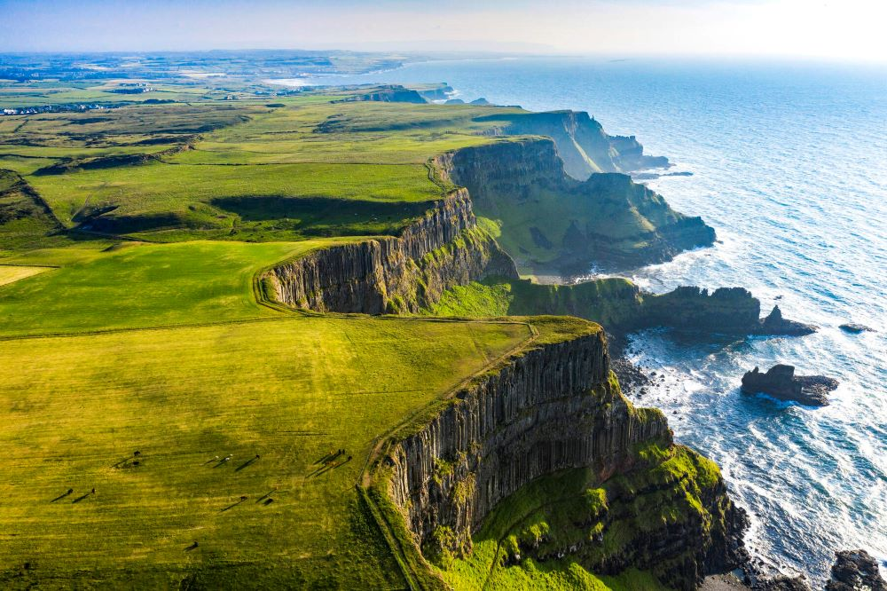

"ABOUT IRELAND"
Ireland, also known as the Republic of Ireland, is an island in the North Atlantic Ocean, in north-western Europe.
It is separated from Great Britain to its east by the North Channel, the Irish Sea, and St George's Channel.
Ireland is the second-largest island of the British Isles, the third-largest in Europe, and the twentieth-largest in the world.
Ireland, country of western Europe occupying five-sixths of the westernmost major island of the British Isles.
Ireland's location relative to Europe and the United Kingdom.
The magnificent scenery of Ireland’s Atlantic coastline faces a 2,000 mile (3,200 km) wide expanse of ocean, and its geographic isolation has helped it to develop a rich heritage of culture and tradition that was linked initially to the Gaelic language.
Washed by abundant rain, the country’s pervasive grasslands create a green-hued landscape that is responsible for the popular sobriquet Emerald Isle.
Ireland is also renowned for its wealth of folklore, from tales of tiny leprechauns with hidden pots of gold to that of the patron saint, Patrick, with his legendary ridding the island of snakes and his reputed use of the three-leaved shamrock as a symbol for the Christian Trinity.
But while many may think of Ireland as an enchanted land, the republic has been beset with perennial concerns—emigration, cultural and political identity, and relations with Northern Ireland (comprising the 6 of Ireland’s 32 counties within the province of Ulster that remain part of the United Kingdom).
At the beginning of the 21st century, Ireland’s long-standing economic problems were abating, owing to its diverse export-driven economy, but calamity struck again in 2008 when a new financial and economic crisis befell the country, culminating in a very costly bailout of the Irish economy by the European Union (EU) and the International Monetary Fund.
The emergence of Ireland as an independent country is a fairly recent phenomenon.
Until the 17th century, political power was widely shared among a rather loosely constructed network of small earldoms in often-shifting alliances.
Following the so-called “Flight of the Earls” after an unsuccessful uprising in the early 17th century, Ireland effectively became an English colony.
It was formally incorporated into the United Kingdom in 1801.
A 1914 Home Rule Act was passed but never implemented due to pro-union militancy in the north, the onset of World War I, and the subsequent Irish War of Independence.
In 1920 the island was effectively partitioned with the creation of Northern Ireland, a six-county area with devolved powers within the United Kingdom, whereas under the Anglo-Irish Treaty of December 6, 1921, the other 26 counties became the Irish Free State, a self-governing dominion within the British Commonwealth and Empire.
In 1937 the southern state passed a new constitution that offered a more robust expression of sovereignty, and in 1949 it formally left the Commonwealth as the Republic of Ireland.
Since then Ireland has become integrated with the rest of western Europe.
It joined the European Economic Community (forerunner of the EU) in 1973.
Though the country generally retained a neutral role in international affairs, in 2008 Ireland became an impediment to the enactment of the Lisbon Treaty an
agreement aimed at streamlining the EU’s processes and giving it a higher international profile
when the Irish voted against the passage of the treaty in a national referendum.
The treaty, however, was approved by Irish voters in a second referendum, held the following year.
Dependent on agriculture, Ireland was long among Europe’s poorest regions, a principal cause of mass migration from Ireland, especially
during the cycle of famine in the 19th century.
Some 40 million Americans trace their ancestry to Ireland as a result of that traumatic exodus, as do millions of others throughout the world.
Every year members of this diaspora visit their ancestral homeland and forge connections with long-lost family.
WHY CAMP IN IRELAND?
Camping on the island of Ireland comes in many shapes and forms.
From retro teepees and luxurious glamping pods to modern camper vans, there's something for everyone.
And it's the best way to see Ireland's star attraction – its natural beauty – up close and personal.
Camping is also a great way to travel sustainably in Ireland.
By going off the beaten track, enjoying green environments, and supporting local businesses, you're taking part in the green travel revolution!
Don't forget to clean up your campsite when you're moving on and leave no trace.
"FUN FACTS OF IRELAND"
- Because of its lush, rolling hills and landscape, Ireland's nickname is "The Emerald Isle."
- Saint Patrick is Ireland's patron saint, even though he actually was born in Britain.
- Ireland is the 20th largest island in the world.
- The United Kingdom governs Northern Ireland, but the rest of Ireland is an independent nation.
- Ireland ranks seventh worldwide in the average consumption of beer per person.
- The Largest lake in the Republic of Ireland is lough Corrib.
- The tallest mountain in Ireland is Carrauntoohil.
- 5 Million people call the Republic of Ireland home.
- Ireland's capital city is Dublin.
- Ireland has a lot of small islands off the coast of its mainland.
- Ireland has lots of castles to visit and explore.
- Three different seas surround Ireland.
- The longest river in Ireland is the Shannon.
- The Republic of Ireland is made up of 26 different counties.
- The Republic of Ireland has 7,524 kilometers of coastline.
- Ireland has two officail languages, Gaeilge and English.
- Ireland's mountainous districts get more than 2000 mms of rainfall per year.
- Ireland's unofficial national plant is the shamrock.
- 20% of the Republic's national land area is covered with peat soil.
|
|